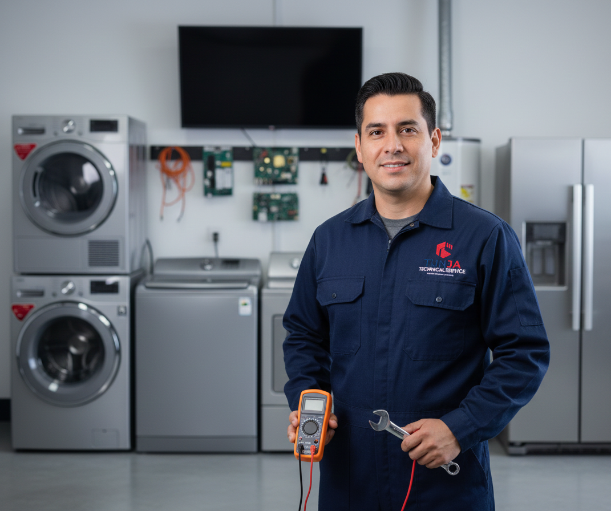

Sus electrodomésticos
en manos expertas.
Reparación, instalación y mantenimiento de lavadoras, neveras, televisores, calentadores y secadoras. Servicio a domicilio en Tunja y todo Boyacá con garantía real.
Atendemos las principales marcas

¿Quiénes Somos?
Fundada en 2021, Tunja Technical Service nació con la firme misión de dignificar el servicio técnico de electrodomésticos en el departamento de Boyacá. Nos especializamos en la revisión, diagnóstico avanzado, instalación y mantenimiento de equipos residenciales y comerciales.
Nuestro equipo está conformado por ingenieros y técnicos expertos en electrónica digital y línea blanca, respaldados por una administración comprometida con brindar respuestas ágiles y transparentes. No solo reparamos aparatos: devolvemos la tranquilidad y el confort a los hogares boyacenses, asegurando en cada servicio tres pilares innegociables: calidad, confianza y garantía.
Formación continua en las últimas tecnologías
Solo piezas de calidad garantizada
Respaldo real en cada intervención
Atendemos en Tunja y Boyacá
Servicios Especializados
Pase el cursor sobre cada tarjeta para conocer el detalle del servicio
Lavadoras y Secadoras
Ver detalleLavado y Secado
- Mantenimiento preventivo integral
- Mantenimiento Correctivo
- Programacion de sistemas digitales
- Solución de ruidos extraños
- Cambio de transmisiones y motores
Neveras y Nevecones
Ver detalleRefrigeración
- Fallas en sistemas No-Frost
- Recarga de gas refrigerante ecológico
- Sustitución de compresores
- Cambio de sensores térmicos
- Diagnóstico Refrigeración comercial
Televisores y Tarjetas
Ver detalleElectrónica Avanzada
- Reparación de tarjetas Main Board
- Fuentes de poder a nivel componente
- Cambio de retroiluminación LED
- Soluciones de encendido
- Diagnóstico a nivel chip
Calentadores a Gas
Ver detalleGas y Eléctricos
- Limpieza técnica de quemadores
- Reparación de valvulas
- Sustitución de termostatos
- Cambio de diafragmas
- Detección estricta de fugas de gas
¿Cómo Trabajamos?
Contáctenos
Escríbanos por WhatsApp describiendo el problema. Le respondemos en minutos.
Diagnóstico
Un técnico certificado visita su domicilio y evalúa el equipo sin costo oculto.
Reparación
Realizamos la intervención con repuestos originales y herramienta especializada.
Garantía
Entregamos garantía escrita. Su tranquilidad es nuestro compromiso final.
Reseñas Verificadas
"Mi nevera Samsung llevaba dos semanas sin enfriar bien. Llamé al técnico en la mañana y en la tarde ya estaba en mi casa. Diagnosticó el problema en 20 minutos, cambió el compresor y al día siguiente estaba funcionando perfectamente. El precio fue justo y me dieron garantía por escrito. ¡100% recomendados!"
"Tenía un televisor LG de 55 pulgadas que no encendía. Otros técnicos me dijeron que no tenía reparación. Tunja Technical Service lo revisó a fondo, identificaron que era la tarjeta de poder y lo repararon a nivel de componente. Me ahorraron el costo de un TV nuevo. Profesionales de verdad."
"Mi lavadora Haceb hacía un ruido horrible al centrifugar. Los chicos vinieron puntual, encontraron que la transmision estaba dañada y la cambiaron ese mismo día. El trabajo quedó limpio y no dejaron ningún desorden en la casa. Muy buena atención desde el primer mensaje de WhatsApp."
"El calentador de gas de mi casa empezó a fallar en pleno invierno. Llame a Tunja Technical Service, me atienden ese mismo día en Duitama. Revisaron la válvula de gas, cambiaron el modulo de tarjeta y calibraron la temperatura. Agua caliente desde esa misma noche. Excelente servicio a domicilio."
"Contraté el mantenimiento preventivo de mi nevecón samsung y mi lavadora Whirlpool. Los dos técnicos que llegaron fueron muy amables, explicaron cada paso del proceso y me dieron recomendaciones para cuidar los equipos. El precio del paquete fue muy razonable. ¡Ya tienen cliente fijo!"
"Excelente servicio, transparencia, puntualidad y sobretodo garantía. La paciencia que me tuvieron con el tema de mi lavadora y secadora y ver qué lograron dar con lo que estaba fallando no tiene precio. Súper recomendados Excelente empresa."
Nuestra Ubicación
Visítenos o solicite servicio a domicilio en toda la región
Dirección
Calle 54 No 9-27
Barrio La Granja
Tunja, Boyacá
Horario de Atención
Lunes a Viernes: 8:00 am – 6:00 pm
Sábados: 8:00 am – 2:00 pm
Domingos: Previa cita
Contacto Directo
Zona de Cobertura
Tunja · Duitama · Sogamoso
Villa de Leyva · Paipa · Ramiriqui
y todo el departamento de Boyacá
No espere más — contáctenos hoy
Atendemos en Tunja y todo el departamento de Boyacá. Respuesta rápida, diagnóstico honesto y garantía real.
Escribir por WhatsApp